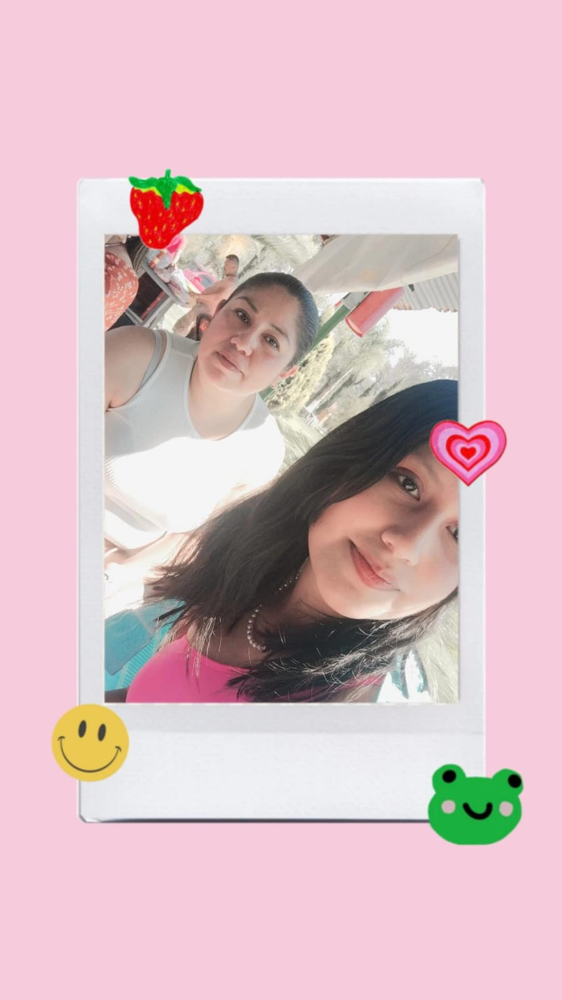
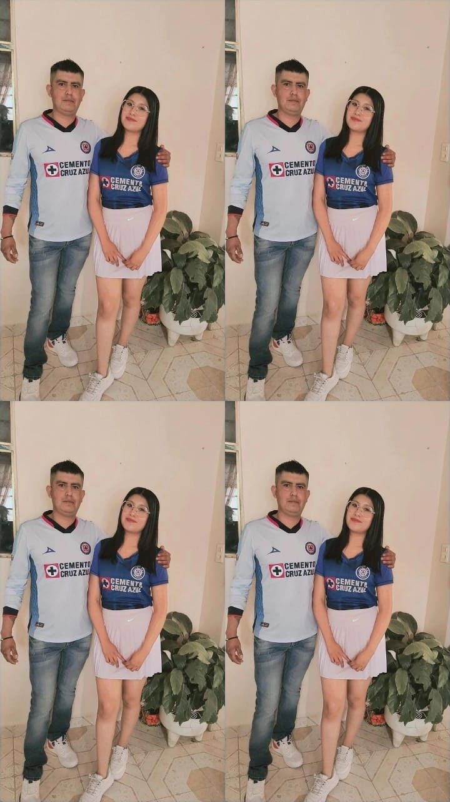
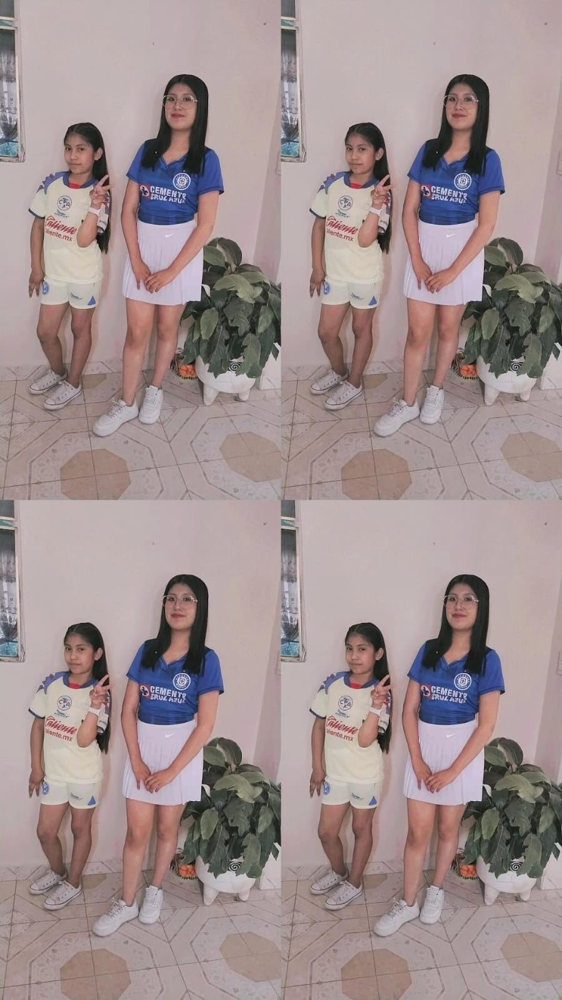
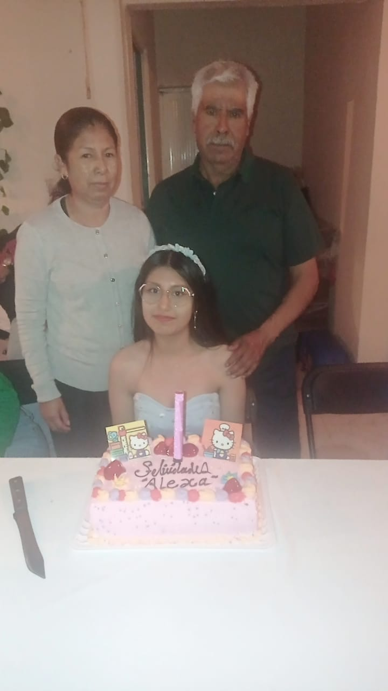
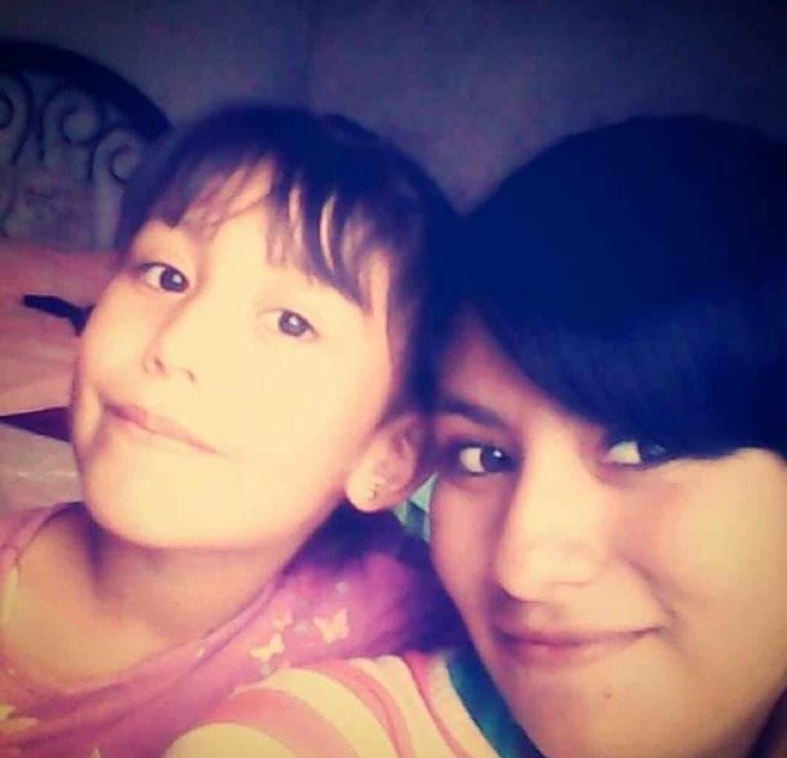
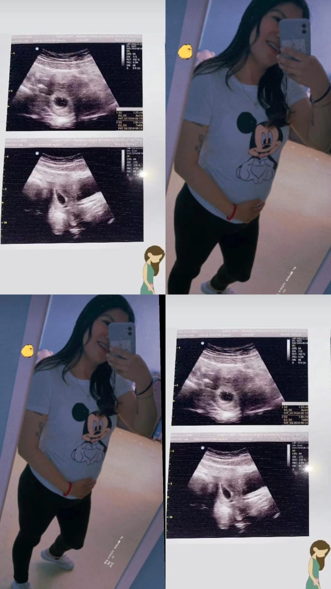
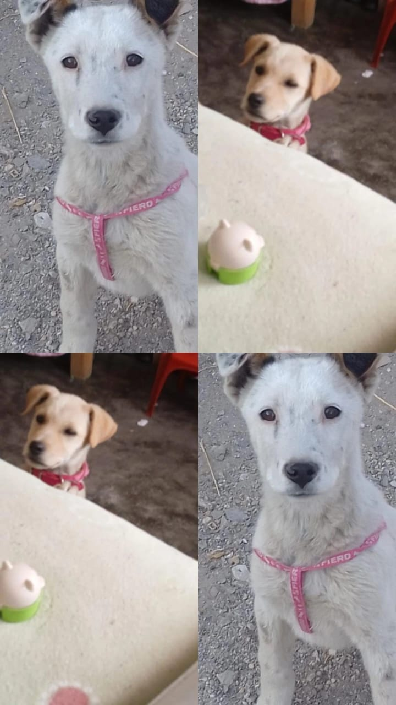

Mi mamá es Eva Angélica Torres Cruz es una increíble persona y sobre todo mi confidente; ella y yo nos llevamos muy bien siempre me acompaña en mis tonterías y tenemos un carácter muy similar

Mi papá es Edgar Miguel Sánchez Anaya, el y yo nos parecemos en muchos aspectos y siempre me consiente en todo es un increíble papá pues a pesar de su trabajo hace lo posible por pasar tiempo conmigo

Mi hermanita es Alison Daniela Sánchez Torres,amo demasiado a mi hermana es mi otra mitad y mi persona favorita a pesar de la diferencia de edad siempre hemos tenido una comunicación y una relación muy linda; ella y yo nos parecemos demasiado

Ellos son mis abuelitos paternos Tomasa y Pedro son super importantes en mi vida pues he convivido con ellos desde muy pequeña y la mayor parte del tiempo me la paso en su casa platicando

Ella es mi tía Diana es como una hermana mayor para mí y la quiero mucho, siempre he sido muy unida a ella y casi siempre hacemos lo posible para salir y platicar de lo que nos ha pasado a cada una y a pesar de que ya no vive conmigo siempre está al pendiente de mi

El o ella es mi frijolito el bebé de mi tía desde que supimos que venía en camino me emocione demasiado y le empecé a comprar muchas cositas para cuando nazca,es como mi sobrin@ pues con su mamá llevo una relación como hermanas;estoy súper emocionada por conocerl@

Ellas son Luna y Kira mis mascotas yo amo a esas dos demasiado son como mis bebés siempre me acompañan a todos lados y se la pasan a mi lado suelen ser muy cariñosas conmigo aunque con los demás son un poco indiferentes
